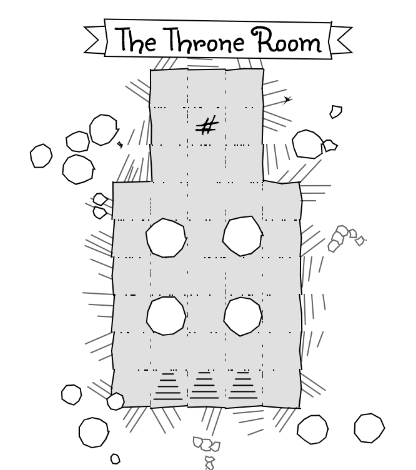
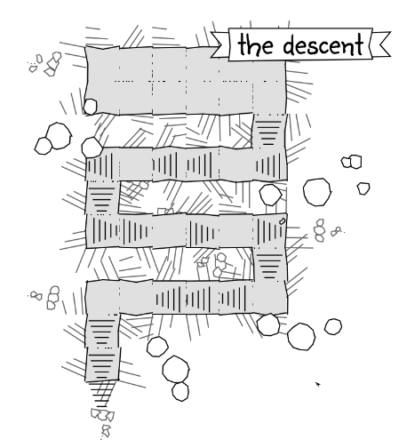

Players enter down the stairs. The room is choking with dust, rocks and lose rubble underfoot. The room is blocked by a cave-in. Players can move the rocks by hand or using magic. When crawling through any gaps they create more rocks will fall.
There is a trap in the second room. In the North West corner of the room is a locked door. From behind the door players can hear (scratching / dripping / bubbling / sobbing) ...
Players enter down the stairs. Pillars reach up into the darkness. At the far end, shrouded in gloon, a strong wooden throne can be seen. Sitting on the throne is a long forgotten skeleton, in it's lap lays the ???
The path zig-zags down into darkenss. Lose rocks and debris fall. The steps are slick with a grey slime, random gusts of dank wind buffet players as they look down.